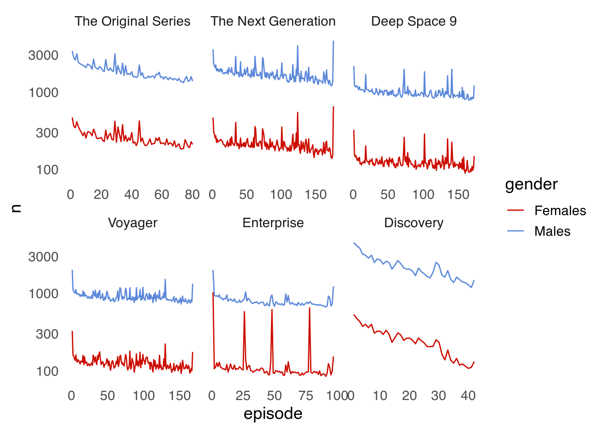
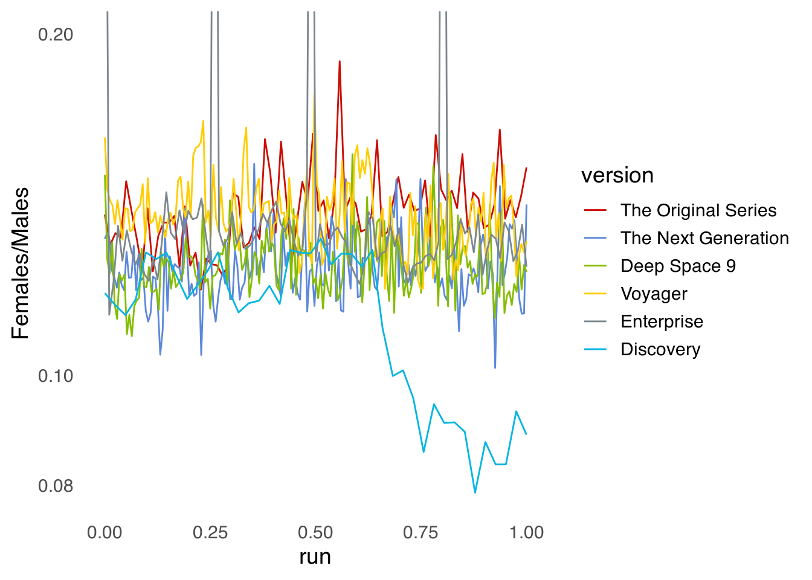
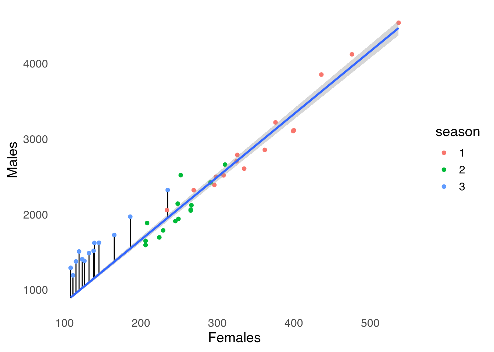

Analizando ratings de Star Trek en IMDB
In English: Star Trek ratings on IMDBCon mi novia estamos viendo Star Trek: The Next Generation. La primera temporada es bastante mala, pero luego remonta. Me dio curiosidad si los ratings mostraban eso. Entonces empecé a bajar los ratings de cada capítulo en IMDB. En el medio, me encontré que IMDB provee ratings promedio por demografía, así que decidí también bajar eso.
Y ya que estamos, bajé también los ratings de las otras series de Star Trek.
Scrapeando (¿o escrapeando?) los datos
Primero, cargo las librerías. data.table para el análisis de datos, magrittr para cadenitas, rvest para scrapear y ggplot2 para visualizar los resultados. ggsci es una librería con muchas escalas de colores para ggplot2 y la cargo para usar la única escala que es razonable usar en un post como este: scale_color_startrek().
library(data.table)
library(rvest)
library(magrittr)
library(ggplot2)
library(ggsci)
theme_set(theme_minimal(14) +
theme(panel.grid = element_blank()))Luego funciones para scrapear ratings. Cada serie tiene una página donde se listan las temporadas. get_series() detecta esos links y scrapea cada temporada con get_season()1.
get_series_ <- function(id) {
home_url <- paste0("https://www.imdb.com/title/", id)
message("Series: ", id)
seasons <- html_session(home_url) %>%
html_nodes("#title-episode-widget div:nth-child(4) a") %>%
html_text() %>%
rev()
data <- lapply(seasons, function(x) get_season(id, x))
rbindlist(data)
}
get_series <- memoise::memoise(get_series_,
cache = memoise::cache_filesystem("data/star_trek/"))La página de cada temporada tiene una tabla con los capítulos y el rating medio de cada uno. Como también quiero los ratings en detalle, la función busca los links de cada capítulo y le scrapea los detalles con get_details_episode() .
get_season_ <- function(id, season) {
message("Season: ", season)
url <- paste0("https://www.imdb.com/title/", id, "/episodes?season=", season)
session <- rvest::html_session(url)
titles <- rvest::html_nodes(session, "#episodes_content strong a") %>%
html_attr("title") %>%
na.omit()
stars <- rvest::html_nodes(session, ".ipl-rating-star.small .ipl-rating-star__rating") %>%
html_text()
if (length(stars) == 0) {
return(NULL)
}
dates <- rvest::html_nodes(session, ".airdate") %>%
html_text() %>%
lubridate::dmy()
links <- html_nodes(session, "#episodes_content strong a") %>%
html_attr("href")
links <- links[links != "#void"]
ids <- strsplit(links, "/") %>%
vapply(function(x) x[3], character(1))
rating_details <- lapply(ids, get_details_episode)
data <- data.table::data.table(date = dates,
number = seq_along(titles),
title = titles,
rating = as.numeric(stars),
season = season,
details = rating_details
)
}
get_season <- memoise::memoise(get_season_,
cache = memoise::cache_filesystem("data/star_trek/"))Finalmente, get_details_episode() entra a la página de ratings de un episodio y scrapea la distribución de ratings, el rating promedio por género y la cantidad de ratings por género.
get_details_episode <- function(id) {
url <- paste0("https://www.imdb.com/title/", id, "/ratings")
session <- html_session(url)
ratings <- session %>%
html_nodes("td:nth-child(3) .leftAligned") %>%
html_text() %>%
trimws() %>%
gsub(",", "", .) %>%
as.numeric()
ratings_gender <- session %>%
html_nodes("table:nth-child(11) .ratingTable:nth-child(2) .bigcell") %>%
html_text() %>%
as.numeric()
number_gender <- session %>%
html_nodes("table:nth-child(11) .ratingTable:nth-child(2) a") %>%
html_text() %>%
trimws() %>%
gsub(",", "", .) %>%
as.numeric()
data.table::data.table(gender = list(data.table::data.table(gender = c("All", "Males", "Females"),
rating = ratings_gender,
N = number_gender)),
ratings = list(data.table::data.table(rating = 10:1,
N = ratings))
)
}Finalmente, manualmente busqué los ids las distintas versiones de Star Trek.
star_treks <- c(tos = "tt0060028",
tng = "tt0092455",
ds9 = "tt0106145",
voyager = "tt0112178",
enterprise = "tt0244365",
discovery = "tt5171438"
)
labs_st <- setNames(
c("The Original Series",
"The Next Generation",
"Deep Space 9",
"Voyager",
"Enterprise",
"Discovery"),
names(star_treks))Y a cada una le aplico get_series() y combino todo fila a fila con data.table::rbindlist().
data <- lapply(star_treks, get_series) %>%
rbindlist(idcol = "version") %>%
.[, episode := 1:.N, by = version] %>%
.[, version := factor(version, levels = names(star_treks), ordered = TRUE)]Esta es la pinta de los datos:
head(data)## version date number title rating season
## 1: tos 1988-11-27 1 The Cage 7.7 1
## 2: tos 1966-09-08 2 The Man Trap 7.3 1
## 3: tos 1966-09-15 3 Charlie X 7.1 1
## 4: tos 1966-09-22 4 Where No Man Has Gone Before 7.8 1
## 5: tos 1966-09-29 5 The Naked Time 7.9 1
## 6: tos 1966-10-06 6 The Enemy Within 7.7 1
## details episode
## 1: <data.table[1x2]> 1
## 2: <data.table[1x2]> 2
## 3: <data.table[1x2]> 3
## 4: <data.table[1x2]> 4
## 5: <data.table[1x2]> 5
## 6: <data.table[1x2]> 6Cada fila es un episodio, que tiene la versión de Star Trek a la que pertenece, la fecha de emisión, y otros datos. Hasta ahí simple. Se complica un poco en la columna details.
data[1, ]$details[[1]]## gender ratings
## 1: <data.table[3x3]> <data.table[10x2]>Cada fila contiene una lista que contiene dos tablas, “gender” y “ratings”. La tabla “gender” tiene el rating promedio y el número de valoraciones para cada género.
data[1, ]$details[[1]]$gender[[1]]## gender rating N
## 1: All 7.7 5344
## 2: Males 7.7 3390
## 3: Females 7.7 470La tabla “ratings” tiene el número de valoraciones para cada rating numérico.
data[1, ]$details[[1]]$ratings[[1]]## rating N
## 1: 10 991
## 2: 9 644
## 3: 8 1447
## 4: 7 1271
## 5: 6 577
## 6: 5 220
## 7: 4 73
## 8: 3 40
## 9: 2 32
## 10: 1 49Este formato de tablas anidadas es complicado al principio, pero es bastante natural para ciertos datos.
Analizando los datos
Ahora que tengo todos los datos, lo primero que me interesa es la pregunta original. ¿Cómo evolucionó la recepción de The Next Generation a lo largo de las temporadas?
data[version == "tng"] %>%
ggplot(aes(episode, rating)) +
geom_line(aes(color = season, group = 1)) +
geom_line(data = function(x) copy(x)[, rating := mean(rating), by = season],
aes(color = season), size = 1) +
scale_color_startrek(guide = "none")
(Notar el truquito en el segundo geom_line(). El argumento data de los geoms puede ser una función que se aplica al dataframe con el dato global. En este caso, reemplazo a rating por el rating medio por cada temporada.)
El efecto está bastante claro. Las primeras dos temporadas fueron bastante mediocres y recién para la tercera, el programa mejora. Y la calidad se mantiene más o menos estable hasta una pequeña recaída en la última temporada. Mientras escribo esto, mi novia y yo estamos por la mitad de la 5ta temporada, así que no puedo emitir opinión sobre esa última temporada.
Muy notable es el lo mal recibido que fue el último capítulo de la segunda temporada. Y con buena razón. Es un capítulo hecho con clips de otros capítulos, porque los productores se quedaron sin plata y tuvieron que hacer el capítulo bien barato y rápido. Es increíble que los fans hayan decidido seguir viendo la serie luego de un final de temporada tan abismal.
¿Cómo se compara TNG con las demás versiones de Star Trek?
data %>%
ggplot(aes(episode, rating)) +
geom_line(aes(color = season, group = 1)) +
geom_line(data = function(x) copy(x)[, rating := mean(rating), by = .(version, season)],
aes(color = season), size = 1) +
scale_color_startrek(guide = "none") +
facet_wrap(~version, scales = "free_x", labeller = labeller(version = labs_st))
Parece que es algo común que Star Trek mejore con el tiempo. Además de The Next Generation, Deep Space 9, Voyager y y Enterprise también alcanzaron su mejor momento luego de las primeras temporadas. The Original Series y Discovery son las dos excepciones. En ambas series, la recepción popular bajó mucho en la tercera temporada.
¿La caída de Discovery es igual a la de The Original Series? Vi la tercera temporada de Discovery y no me pareció particularmente peor que las anteriores. Y vivir en este siglo no sólo significa que los capítulos lentísimos de TOS me resultaron un bodrio, sino que viví la reacción popular de Discovery y sé que fue víctima de la polarización extrema que domina estos tiempos. Sintomático de esto es la enorme diferencia entre la recepción de la crítica y los votos de la audiencia. En Rotten Tomatoes, la tercera temporada de Discovery es la mejor ranqueada, con un 90%, a pesar de que los votos de la audiencia le da 46%. Lo mismo se ve en Metacritic: el promedio de la crítica –7.3– es mucho mayor que el de les usuaries –3.8.
En particular, se da mucho que cuando ciertas películas o series ofenden a alguna subcultura en particular, aparecen miles de trolls poniendo 1 estrella en masa. Esto se ve claramente ploteando la proporción de 1s y 10s en cada episodio.
data[, details[[1]]$ratings[[1]], by = .(version, season, episode, number)] %>%
.[, .(one_star = N[rating == 1]/sum(N),
ten_star = N[rating == 10]/sum(N)), by = .(episode, version)] %>%
melt(id.vars = c("episode", "version")) %>%
ggplot(aes(episode, value)) +
geom_line(aes(color = variable)) +
scale_color_startrek(name = "Rating %", labels = c(one_star = "One Star",
ten_star = "Ten Stars")) +
facet_wrap(~version, scales = "free_x", labeller = labeller(version = labs_st))
Salvo excepciones, ningún capítulo tiene una cantidad apreciable de unos en las series viejas. Discovery, en cambio, tiene un ~10% de malos votos, que incluso superan a los votos de 10 estrellas en últimos capítulos.
Un dato interesante que tiene IMDB es la división por género. La ciencia ficción es un género bastante dominado por los hombres, ¿se ve reflejado esto en la cantidad de ratings?
data %>%
.[, details[[1]]$gender[[1]] , by = .(version, season, episode, number)] %>%
.[gender != "All"] %>%
.[, .(n = sum(N)), by = .(episode, version, gender)] %>%
ggplot(aes(episode, n)) +
geom_line(aes(color = gender)) +
scale_color_startrek() +
scale_y_log10() +
facet_wrap(~version, scales = "free_x", labeller = labeller(version = labs_st))
Sí! definitivamente. Tuve que usar una escala logarítmica para que se distinguieran las líneas con la cantidad de calificaciones de mujeres.
Es interesante cómo en todas las versiones, y para ambos géneros, se ve una tendencia de descenso en la cantidad de ratings a medida que avanza la serie. Me imagino que es un efecto de supervivencia. Muchas personas empezarán a mirar cada versión desde el principio y luego se aburrirán y dejarán de verla. Entonces es natural que haya más gente en general dispuesta a calificar los primeros capítulos.
En cuanto a la distribución de género, la cantidad de calificaciones en cada episodio parece ser más o menos constante, con la obvia excepción de cuatro capítulos de Enterprise que tienen casi tantas calificaciones de mujeres como de hombres.
Estos son los 10 capítulos con mayor proporción de calificaciones femeninas:
data %>%
.[, details[[1]]$gender[[1]] , by = .(version, season, episode, number)] %>%
.[gender != "All"] %>%
.[, .(n = sum(N)), by = .(episode, version, gender)] %>%
dcast(episode + version ~ gender, value.var = "n") %>%
.[, ratio := Females/Males] %>%
data[., on = .NATURAL] %>%
.[order(-ratio)] %>%
.[1:10] %>%
.[, .(version, season, number, title, rating, ratio = scales::percent(ratio, accuracy = 0.1))] %>%
knitr::kable()| version | season | number | title | rating | ratio |
|---|---|---|---|---|---|
| enterprise | 4 | 3 | Home | 8.1 | 83.5% |
| enterprise | 2 | 1 | Shockwave, Part II | 8.4 | 68.3% |
| enterprise | 2 | 23 | Regeneration | 8.6 | 64.7% |
| enterprise | 1 | 1 | Broken Bow | 7.9 | 51.6% |
| tos | 2 | 15 | The Trouble with Tribbles | 8.9 | 18.9% |
| voyager | 4 | 17 | Retrospect | 6.8 | 17.7% |
| voyager | 2 | 25 | Resolutions | 7.4 | 16.8% |
| voyager | 3 | 16 | Blood Fever | 7.3 | 16.5% |
| tos | 3 | 19 | Requiem for Methuselah | 7.4 | 16.5% |
| tos | 2 | 10 | Journey to Babel | 8.6 | 16.3% |
Nunca vi Enterprise ni conozco de qué van esos 4 capítulos aparentemente tan populares entre las mujeres, así que no sabría decir por qué tienen (relativamente) tantas calificaciones femeninas.
Es difícil comparar la proporción de calificaciones de hombres y de mujeres en la figura anterior, así que mejor plotear directamente el porcentaje de calificaciones femeninas por capítulo.
data %>%
.[, details[[1]]$gender[[1]] , by = .(version, season, episode, number)] %>%
.[gender != "All"] %>%
.[, .(n = sum(N)), by = .(episode, version, gender)] %>%
dcast(episode + version ~ gender, value.var = "n") %>%
.[, run := scales::rescale(episode, to = c(0, 1)), by = version] %>%
ggplot(aes(run, Females/Males)) +
geom_line(aes(color = version)) +
scale_y_log10() +
scale_color_startrek( labels = labs_st) +
coord_cartesian(ylim = c(NA, 0.2)) 
Además de los picos de Enterprise, lo más notorio es la brutal caída en la proporción de votos femeninos en la tercera temporada de Discovery, ¿qué pasó ahí? Mi hipótesis es que la horda de trolls que fue a calificar con 1 estrella por alguna ofensa percibida eran en su mayoría hombres.
En general, dejando de lado esos episodios anómalos de Enterprise, The Original Series es la serie más votada por mujeres casi empatada con Voyager. Las diferencias, de todas formas, no son grandes y en la medida de que estos números sean representativos del público de Star Trek en general (importante suposición), la audiencia de esta serie es más de 80% hombres.
Esto en cuanto a la cantidad, ¿hay diferencias en las calificaciones promedio entre hombres y mujeres?
data %>%
.[, details[[1]]$gender[[1]] , by = .(version, season, episode, number)] %>%
.[gender != "All"] %>%
ggplot(aes(episode, rating)) +
geom_line(aes(color = gender)) +
scale_color_startrek() +
facet_wrap(~version, scales = "free_x", labeller = labeller(version = labs_st))
Hay, pero poca. En general, las mujeres tienden a puntuar de forma más positiva que los hombres. Esto quizás tiene que ver con que, siendo Star Trek una serie dirigida principalmente hacia los hombres, las mujeres que ven la serie y encima se toman el trabajo de ir a IMDB a calificarla, son un grupo más autoseleccionado. Los capítulos con gran proporción de calificaciones femeninas en Enterprise no parecen que hayan recibido particularmente mejor calificación por parte de las mujeres.
Eso sí, Discovery sobresale de nuevo. La diferencia parece más pronunciada al principio de la serie, y terriblemente obvia hacia el final. Las mujeres calificaron, en promedio, los capítulos de la tercera temporada de Discovery con el mismo valor que las temporadas anteriores. El gran cambio se dio en las calificaciones masculinas. Esto es consistente con mi teoría de la mayoría masculina en el grupo ofendido por Discovery.
Para finalmente cuantificar el “efecto troll”, voy a usar que tanto la cantidad como la calificación media de las mujeres se mantuvo más o menos constante. Asumiendo entonces que esta subpoblación mantuvo su comportamiento a lo largo de las temporadas, voy a ajustar un modelo lineal que predice la cantidad de valoraciones de hombres a partir de la cantidad de valoraciones de mujeres. Luego, al comparar la cantidad de calificaciones reales con la predicción, se puede tener una idea del número de calificaciones “extra”.
discovery_ratings <- data %>%
.[, details[[1]]$gender[[1]] , by = .(version, season, episode, number)] %>%
# .[gender != "All"] %>%
.[, .(n = sum(N)), by = .(episode, version, season, gender)] %>%
.[version == "discovery"] %>%
dcast(version + episode + season ~ gender, value.var = "n")
model <- discovery_ratings %>%
.[episode <= 20] %>%
lm(Males ~ Females-1, data = .)
discovery_ratings[, predicted := predict(model, newdata = discovery_ratings)]
extra <- discovery_ratings %>%
.[, .(Males = sum(Males),
Females = sum(Females),
predicted = sum(predicted)), by = .(version, season)]
discovery_ratings %>%
ggplot(aes(Females, Males)) +
geom_segment(data = ~.x[season == 3], aes(xend = Females, yend = predicted)) +
geom_point(aes(color = season)) +
# geom_line(aes(color = season, y = predicted)) +
geom_smooth(method = "lm", formula = y ~ x-1, data = ~.x[episode < 20], fullrange = TRUE)
Esos puntos azules que están por encima de la recta representan las calificaciones extra por parte de hombres en la tercera temporada. En total son 5138 calificaciones, o un 25% de las calificaciones totales hechas por hombres.
Notar que uso
memoisepara guardar los resultados en cache. Esto sirve para no molestar tanto a IMDB y hacer las cosas más rápido durante el desarrollo y testeo de la función.↩︎